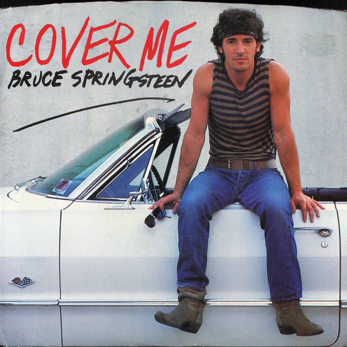
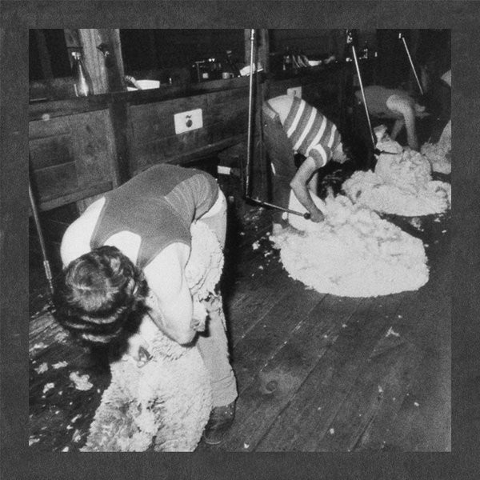
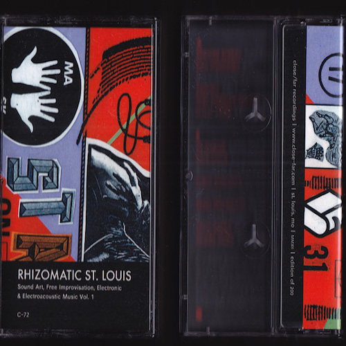
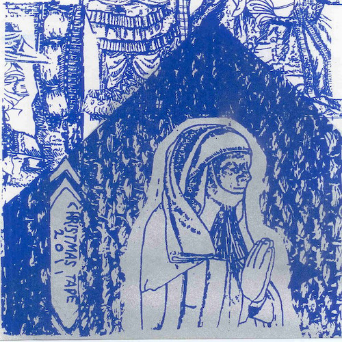

ALBUMS
OTHER
<a href="http://hausumountain.bandcamp.com/album/hausmo-mixtape-i">HausMo Mixtape I by Many HausMo Artists</a>
Mothcock / Form A Log split LP
Spiritual Recess / Rick Weaver split

Cover Me: Springsteen for Weirdos
v/a


RHIZOMATIC ST. LOUIS VOL. I
v/a
<a href="http://humanconduct.bandcamp.com/album/cube-rick-weaver">Cube / Rick Weaver</a>

ALLEY VISION "TOP HAT"
FORM A LOG
DIGITAL DUCK
MLU / The New Flesh split LP
The New Flesh / Pukeattack "Love Cums 1st" Split LP